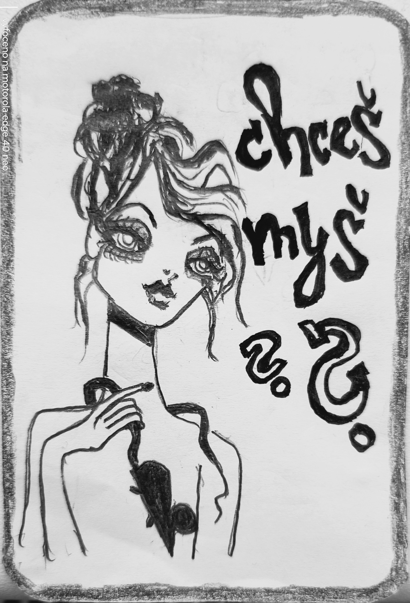

01 · VSTUP → MECHANISMUS
Generátor
Vyber zvíře, otevři ilustraci a pohádku, přidej další karty a vytvoř zadání pro nástroj, hru, pravidlo nebo teorii.
02 · VĚTVENÍLaboratoř pokusů
Ukládej zadání, výstupy, hypotézy, pozorování a testy. Vytvářej odbočky bez přepsání původního pokusu.
03 · SROVNÁNÍPorovnávač
Jedno zadání a různé modely nebo různé instrukce. Výstupy vložíš z libovolného rozhraní.
04 · PRAVIDLA MÍSTNOSTIDokumentace
Jak fungují relativní cesty, URL stav, export, manifest a omezení offline režimu.

Myš je záznamové místo, ne soudce.
Odděluj zdroj, prompt, výstup, pozorování, interpretaci a výsledek testu. Návrh není důkaz a hezká metafora není automaticky funkční mechanismus.